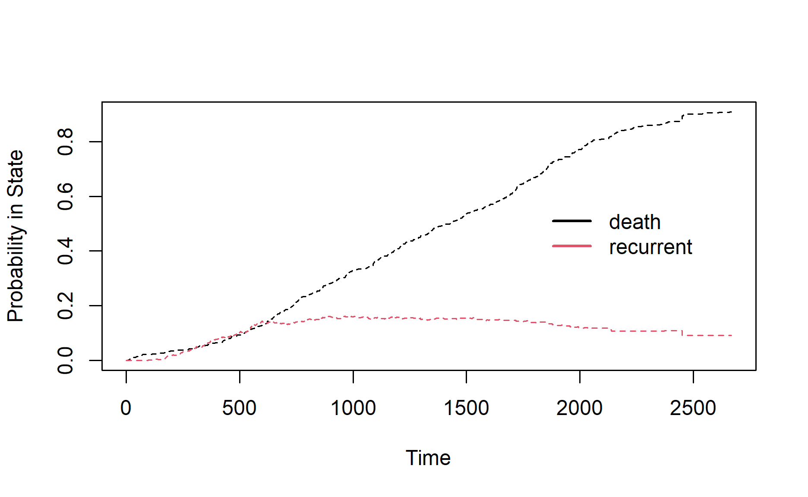
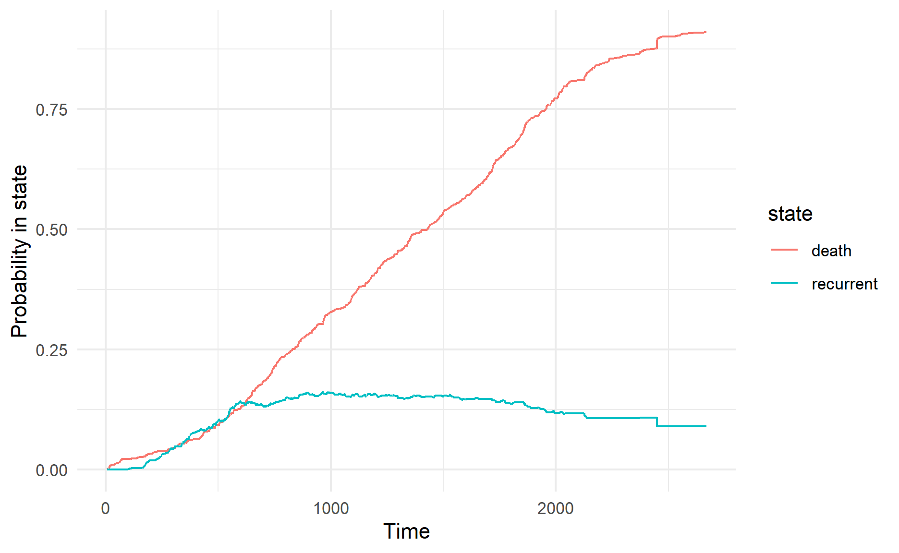

Photo by Philippa Rose-Tite on Unsplash
In my previous post on Cox Proportional Hazard, I have explored how to perform survival analysis on one event, i.e. the subjects can either experience the event or being censored.
However, this scenario is often too simplified for real life scenario. We may want to know the subjects “move” around different “states”.
This is where multi-state modeling become very handy.
Survival package has a nice writeup on multi-state models and competing risk.
Demonstration
According to CRAN, there are different packages that would help us to model multi-state (e.g. mstate, msm).
In this demonstration, I will be using the functions from survival package to model multi-state.
Setup the environment
First, I will load the necessary packages into the environment.
pacman::p_load(tidyverse, survival, tidymodels, condSURV, finalfit)Import Data
I will be using the German breast cancer dataset from condSURV package for the study.
In this dataset, the subjects could have a recurrent breast cancer or died before having another breast cancer. Once have a recurrent breast cancer, the subjects could also “go” to the death state.
The data dictionary for this dataset can be found under this link.
Model Building
Single State
One way to model such multiple event is to treat all other non-interest events as “censored” event. However, this could give us a different results, compared to if we were to consider all the events.
For comparison purpose, I will build a simple model with age.
I will fit a Cox Proportional Model on all the death events.
cox_fit_single_age <-
coxph(Surv(survtime, censdead_comb) ~ age
,data = df)
cox_fit_single_ageCall:
coxph(formula = Surv(survtime, censdead_comb) ~ age, data = df)
coef exp(coef) se(coef) z p
age -0.002138 0.997864 0.004103 -0.521 0.602
Likelihood ratio test=0.27 on 1 df, p=0.6025
n= 686, number of events= 575 From the result, we saw that the likelihood of death decreases when age increases.
This could be there are other significant factors not being captured by the model.
Multi State
Next, I will use coxph function to fit a multi-state model.
First, I will slice the dataset by only keeping the ID and respective predictors to be used in building survival models later on.
df_subset <-
df %>% select(-c(rectime, censrec, survtime, censdead))In order to model the multi-state, we will need to slice the data into the respective exposure.
data1is the dataset that captures the id and respective predictorsdata2is the dataset that captures the remaining required by the other argumentsidis the unique identifier for the subject
tmerge function also allows us to create new variable within the function.
Below are the variables I created within the tmerge function:
tstartandtstopto indicate the start and end of each exposurestat_recis to indicate whether there is any recurrent of the breast cancerstat_death_combis to indicate whether the observed has passed awayprior_recis to capture whether the observed has recurrent breast cancer
df_tmerge <-
tmerge(
data1 = df_subset
,data2 = df
,id = id
,stat_death_comb = event(survtime, censdead_comb)
,stat_rec = event(rectime, censrec)
,prior_rec = tdc(rectime)
)If we were to call the data, we could see that now each observation is being split into the exposure under each event.
head(df_tmerge) id age menopause hormone size grade nodes prog_recp estrg_recp
1 1 38 1 1 18 3 5 141 105
2 1 38 1 1 18 3 5 141 105
3 2 52 1 1 20 1 1 78 14
4 2 52 1 1 20 1 1 78 14
5 3 47 1 1 30 2 1 422 89
6 3 47 1 1 30 2 1 422 89
censdead_comb tstart tstop stat_death_comb stat_rec prior_rec
1 0 0 1337 0 1 0
2 0 1337 2282 0 0 1
3 0 0 1420 0 1 0
4 0 1420 2006 0 0 1
5 1 0 1279 0 1 0
6 1 1279 1456 1 0 1If we were to pass the new object to class function, we will note that the new object has an additional class, which is “tmerge”.
class(df_tmerge)[1] "tmerge" "data.frame"Before building the survival model, I will create an additional indicator to capture the event under each time step.
df_tmerge_2 <-
df_tmerge %>%
mutate(event = case_when(stat_death_comb == 1 ~ "death"
,stat_rec == 1 ~ "recurrent"
,stat_death_comb == 0 ~ "censored"
,TRUE ~ "check")
,event = factor(event))survival package offers survcheck function to check the data. What I like about this function is it will show the transition matrix.
This would help us in gaining understanding how does the subjects move from states to states.
survcheck(Surv(tstart, tstop, event) ~ 1
,id = id
,data = df_tmerge_2)Call:
survcheck(formula = Surv(tstart, tstop, event) ~ 1, data = df_tmerge_2,
id = id)
Unique identifiers Observations Transitions
686 947 836
Transitions table:
to
from death recurrent (censored)
(s0) 425 261 0
death 0 0 0
recurrent 150 0 111
Number of subjects with 0, 1, ... transitions to each state:
count
state 0 1 2
death 111 575 0
recurrent 425 261 0
(any) 0 536 150Again, I will build the multi-state model with just age as the predictor.
cox_fit_multi_age <-
coxph(Surv(tstart, tstop, event) ~ age
,id = id
,data = df_tmerge_2)
cox_fit_multi_ageCall:
coxph(formula = Surv(tstart, tstop, event) ~ age, data = df_tmerge_2,
id = id)
1:2 coef exp(coef) se(coef) robust se z p
age -0.003114 0.996891 0.005049 0.004645 -0.67 0.503
3:2 coef exp(coef) se(coef) robust se z p
age 0.010868 1.010928 0.007162 0.006644 1.636 0.102
1:3 coef exp(coef) se(coef) robust se z p
age -0.009425 0.990619 0.006286 0.006789 -1.388 0.165
States: 1= (s0), 2= death, 3= recurrent
Likelihood ratio test=4.97 on 3 df, p=0.1738
n= 947, number of events= 836 From the result, we could see that there are multiple sections since we are trying to fit a multi-state model. The descriptions for the different state can be found in the bottom of the result.
Also, we also noted that the coefficients for age are different under the different transition states.
In general, the likelihood decreases with age when the subjects go from initial state to either death or recurrent states.
However, the death likelihood increases with age when the subjects have previously experienced a recurrent breast cancer.
Once that is done, I will pass the info to coxph function to fit the multi-state model.
Note that at each time step, the data behaves like interval censoring, hence we will indicate the start time and end time of each time step.
We will also need to indicate the unique identifier to the function so that the function knows which rows are belonging to the same group.
cox_fit_multi <-
coxph(Surv(tstart, tstop, event) ~
age
+ menopause
+ hormone
+ size
+ grade
+ nodes
+ prog_recp
+ estrg_recp
,id = id
,data = df_tmerge_2)If we were to call the fitted object, we can see that the function will fit a model for each possible transition as indicated in the dataset.
summary(cox_fit_multi)Call:
coxph(formula = Surv(tstart, tstop, event) ~ age + menopause +
hormone + size + grade + nodes + prog_recp + estrg_recp,
data = df_tmerge_2, id = id)
n= 947, number of events= 836
coef exp(coef) se(coef) robust se z
age_1:2 -2.783e-03 9.972e-01 8.057e-03 6.706e-03 -0.415
menopause_1:2 4.644e-02 1.048e+00 1.539e-01 1.362e-01 0.341
hormone_1:2 -2.506e-01 7.783e-01 1.033e-01 1.017e-01 -2.463
size_1:2 3.235e-03 1.003e+00 3.600e-03 3.499e-03 0.925
grade_1:2 1.447e-01 1.156e+00 8.703e-02 8.104e-02 1.786
nodes_1:2 2.330e-02 1.024e+00 1.134e-02 9.696e-03 2.403
prog_recp_1:2 3.403e-04 1.000e+00 2.787e-04 2.665e-04 1.277
estrg_recp_1:2 4.579e-06 1.000e+00 4.017e-04 3.666e-04 0.012
age_3:2 1.767e-02 1.018e+00 1.282e-02 1.257e-02 1.406
menopause_3:2 -8.942e-02 9.145e-01 2.928e-01 2.873e-01 -0.311
hormone_3:2 -2.739e-02 9.730e-01 1.864e-01 1.854e-01 -0.148
size_3:2 1.041e-02 1.010e+00 5.034e-03 4.207e-03 2.474
grade_3:2 2.540e-01 1.289e+00 1.719e-01 1.667e-01 1.524
nodes_3:2 1.094e-02 1.011e+00 1.341e-02 1.213e-02 0.902
prog_recp_3:2 -3.147e-03 9.969e-01 1.130e-03 1.206e-03 -2.610
estrg_recp_3:2 -4.900e-04 9.995e-01 5.390e-04 3.792e-04 -1.292
age_1:3 -1.695e-02 9.832e-01 9.885e-03 1.068e-02 -1.586
menopause_1:3 3.189e-01 1.376e+00 1.955e-01 2.003e-01 1.593
hormone_1:3 -3.551e-01 7.011e-01 1.397e-01 1.402e-01 -2.533
size_1:3 6.528e-03 1.007e+00 4.286e-03 4.654e-03 1.403
grade_1:3 2.651e-01 1.304e+00 1.135e-01 1.118e-01 2.372
nodes_1:3 5.022e-02 1.051e+00 7.804e-03 1.095e-02 4.587
prog_recp_1:3 -2.455e-03 9.975e-01 6.384e-04 7.054e-04 -3.480
estrg_recp_1:3 3.661e-04 1.000e+00 4.646e-04 4.511e-04 0.812
Pr(>|z|)
age_1:2 0.678122
menopause_1:2 0.733171
hormone_1:2 0.013763 *
size_1:2 0.355179
grade_1:2 0.074078 .
nodes_1:2 0.016270 *
prog_recp_1:2 0.201707
estrg_recp_1:2 0.990036
age_3:2 0.159795
menopause_3:2 0.755576
hormone_3:2 0.882562
size_3:2 0.013374 *
grade_3:2 0.127515
nodes_3:2 0.367205
prog_recp_3:2 0.009064 **
estrg_recp_3:2 0.196324
age_1:3 0.112654
menopause_1:3 0.111270
hormone_1:3 0.011317 *
size_1:3 0.160757
grade_1:3 0.017709 *
nodes_1:3 4.5e-06 ***
prog_recp_1:3 0.000501 ***
estrg_recp_1:3 0.416997
---
Signif. codes: 0 '***' 0.001 '**' 0.01 '*' 0.05 '.' 0.1 ' ' 1
exp(coef) exp(-coef) lower .95 upper .95
age_1:2 0.9972 1.0028 0.9842 1.0104
menopause_1:2 1.0475 0.9546 0.8021 1.3681
hormone_1:2 0.7783 1.2849 0.6376 0.9501
size_1:2 1.0032 0.9968 0.9964 1.0101
grade_1:2 1.1557 0.8652 0.9860 1.3547
nodes_1:2 1.0236 0.9770 1.0043 1.0432
prog_recp_1:2 1.0003 0.9997 0.9998 1.0009
estrg_recp_1:2 1.0000 1.0000 0.9993 1.0007
age_3:2 1.0178 0.9825 0.9931 1.0432
menopause_3:2 0.9145 1.0935 0.5208 1.6058
hormone_3:2 0.9730 1.0278 0.6765 1.3994
size_3:2 1.0105 0.9896 1.0022 1.0188
grade_3:2 1.2892 0.7757 0.9299 1.7873
nodes_3:2 1.0110 0.9891 0.9872 1.0353
prog_recp_3:2 0.9969 1.0032 0.9945 0.9992
estrg_recp_3:2 0.9995 1.0005 0.9988 1.0003
age_1:3 0.9832 1.0171 0.9628 1.0040
menopause_1:3 1.3757 0.7269 0.9290 2.0370
hormone_1:3 0.7011 1.4263 0.5327 0.9228
size_1:3 1.0065 0.9935 0.9974 1.0158
grade_1:3 1.3035 0.7672 1.0471 1.6227
nodes_1:3 1.0515 0.9510 1.0292 1.0743
prog_recp_1:3 0.9975 1.0025 0.9962 0.9989
estrg_recp_1:3 1.0004 0.9996 0.9995 1.0013
Concordance= 0.622 (se = 0.012 )
Likelihood ratio test= 137.1 on 24 df, p=<2e-16
Wald test = 128.8 on 24 df, p=3e-16
Score (logrank) test = 148.3 on 24 df, p=<2e-16, Robust = 126.7 p=6e-16
(Note: the likelihood ratio and score tests assume independence of
observations within a cluster, the Wald and robust score tests do not).Alternatively, we will call the transitions within the fitted object to see how many observations are under each state.
cox_fit_multi$transitions to
from death recurrent (censored)
(s0) 425 261 0
death 0 0 0
recurrent 150 0 111We can check the proportional hazard assumptions by using cox.zph function. The proportional hazard assumption should still hold under a multi-state model.
cox.zph(cox_fit_multi) chisq df p
age_1:2 2.27516 1 0.131
menopause_1:2 0.00319 1 0.955
hormone_1:2 0.96030 1 0.327
size_1:2 0.08293 1 0.773
grade_1:2 0.13540 1 0.713
nodes_1:2 0.69096 1 0.406
prog_recp_1:2 0.02391 1 0.877
estrg_recp_1:2 0.24462 1 0.621
age_3:2 1.32732 1 0.249
menopause_3:2 0.39150 1 0.532
hormone_3:2 0.99411 1 0.319
size_3:2 0.48092 1 0.488
grade_3:2 0.97309 1 0.324
nodes_3:2 0.24127 1 0.623
prog_recp_3:2 2.17991 1 0.140
estrg_recp_3:2 2.76324 1 0.096
age_1:3 5.61456 1 0.018
menopause_1:3 2.45257 1 0.117
hormone_1:3 1.28250 1 0.257
size_1:3 0.95601 1 0.328
grade_1:3 6.49387 1 0.011
nodes_1:3 0.08276 1 0.774
prog_recp_1:3 0.72638 1 0.394
estrg_recp_1:3 2.70901 1 0.100
GLOBAL 33.34681 24 0.097Graphs
According to the documentation, the survfit outputs the probability in state for multi-state model.
Next, we will visualize the probability in state for different events.
Before that, I will generate the survfit output.
survfit(Surv(tstart, tstop, event) ~ 1, data = df_tmerge_2, id = id)Call: survfit(formula = Surv(tstart, tstop, event) ~ 1, data = df_tmerge_2,
id = id)
n nevent rmean*
(s0) 947 0 1124.4898
death 947 575 1238.3236
recurrent 947 261 305.1866
*restricted mean time in state (max time = 2668 )I will use base R plotting function to visualize the result.
plot(
survfit(Surv(tstart, tstop, event) ~ 1
,data = df_tmerge_2
,id = id)
,col=c(1,2,1,2)
,lty=c(2,2,1,1)
,xlab = "Time"
,ylab = "Probability in State")
legend(1800, 0.6, c("death"
,"recurrent")
,col=c(1,2)
,lwd=2
,bty='n')
Alternatively, we can use ggplot function to plot the probability in state.
survfit(Surv(tstart, tstop, event) ~ 1, data = df_tmerge_2, id = id) %>%
tidy() %>%
filter(state != "(s0)") %>%
ggplot(aes(time, estimate, color = state)) +
geom_line() +
xlab("Time") +
ylab("Probability in state") +
theme_minimal()
Another package to fit multi-state Cox model
Also, I happened to come across finalfit package that provides a more modular way to fit the multi-state model.
cox_fit_multi_finalfit <-
coxphmulti(df_tmerge_2
,dependent_variable
,explanatory_var
,id = df_tmerge_2$id)cox_fit_multi_finalfitCall:
coxph(formula = Surv(tstart, tstop, event) ~ age + menopause +
hormone + size + grade + nodes + prog_recp + estrg_recp,
data = .data, id = ..1)
1:2 coef exp(coef) se(coef) robust se z
age -2.783e-03 9.972e-01 8.057e-03 6.706e-03 -0.415
menopause 4.644e-02 1.048e+00 1.539e-01 1.362e-01 0.341
hormone -2.506e-01 7.783e-01 1.033e-01 1.017e-01 -2.463
size 3.235e-03 1.003e+00 3.600e-03 3.499e-03 0.925
grade 1.447e-01 1.156e+00 8.703e-02 8.104e-02 1.786
nodes 2.330e-02 1.024e+00 1.134e-02 9.696e-03 2.403
prog_recp 3.403e-04 1.000e+00 2.787e-04 2.665e-04 1.277
estrg_recp 4.579e-06 1.000e+00 4.017e-04 3.666e-04 0.012
1:2 p
age 0.6781
menopause 0.7332
hormone 0.0138
size 0.3552
grade 0.0741
nodes 0.0163
prog_recp 0.2017
estrg_recp 0.9900
3:2 coef exp(coef) se(coef) robust se z
age 0.0176743 1.0178314 0.0128245 0.0125727 1.406
menopause -0.0894232 0.9144585 0.2927656 0.2872615 -0.311
hormone -0.0273896 0.9729821 0.1864414 0.1854126 -0.148
size 0.0104068 1.0104612 0.0050342 0.0042071 2.474
grade 0.2540117 1.2891869 0.1719034 0.1666770 1.524
nodes 0.0109414 1.0110014 0.0134075 0.0121339 0.902
prog_recp -0.0031471 0.9968579 0.0011295 0.0012060 -2.610
estrg_recp -0.0004900 0.9995101 0.0005390 0.0003792 -1.292
3:2 p
age 0.15979
menopause 0.75558
hormone 0.88256
size 0.01337
grade 0.12751
nodes 0.36721
prog_recp 0.00906
estrg_recp 0.19632
1:3 coef exp(coef) se(coef) robust se z
age -0.0169457 0.9831971 0.0098854 0.0106820 -1.586
menopause 0.3189447 1.3756753 0.1955052 0.2002781 1.593
hormone -0.3550847 0.7011140 0.1396641 0.1401975 -2.533
size 0.0065275 1.0065489 0.0042859 0.0046541 1.403
grade 0.2650557 1.3035036 0.1135333 0.1117601 2.372
nodes 0.0502163 1.0514985 0.0078041 0.0109484 4.587
prog_recp -0.0024549 0.9975481 0.0006384 0.0007054 -3.480
estrg_recp 0.0003661 1.0003662 0.0004646 0.0004511 0.812
1:3 p
age 0.112654
menopause 0.111270
hormone 0.011317
size 0.160757
grade 0.017709
nodes 4.5e-06
prog_recp 0.000501
estrg_recp 0.416997
States: 1= (s0), 2= death, 3= recurrent
Likelihood ratio test=137.1 on 24 df, p=< 2.2e-16
n= 947, number of events= 836 Conclusion
That’s all for the day!
Thanks for reading the post until the end.
Feel free to contact me through email or LinkedIn if you have any suggestions on future topics to share.
Refer to this link for the blog disclaimer.
Till next time, happy learning!

Photo by football wife